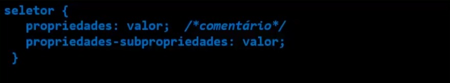

Cascating Style Sheets - Tem por objetivo estilizar um documento HTML com cores, fontes, espaçamento etc.
Sintaxe

Há tês maneiras de utilizar o CSS:
Francis, oh Francis, o que foi que eu fiz? Olha só para você, nem está consciente e continua se empenhando em mostrar para o mundo o que pode fazer... Ele está nocauteado e tudo o que o mantém de pé é o poder de sua vontade de desligar o monitor, você já se provou... Você é um grande professor!